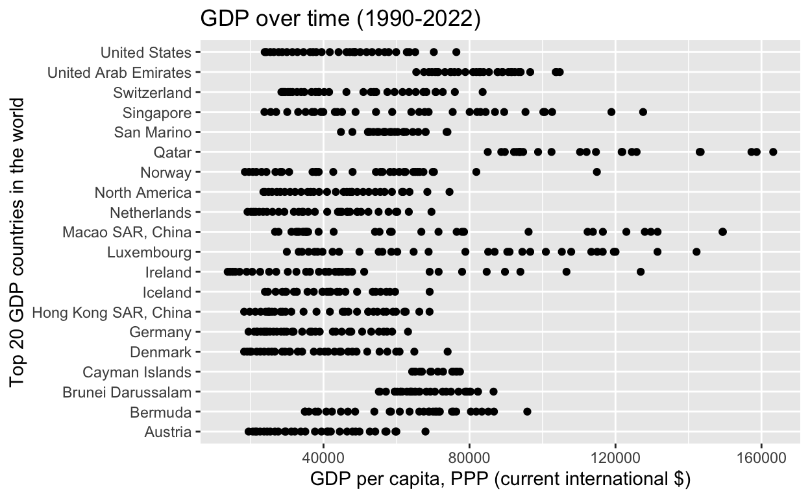
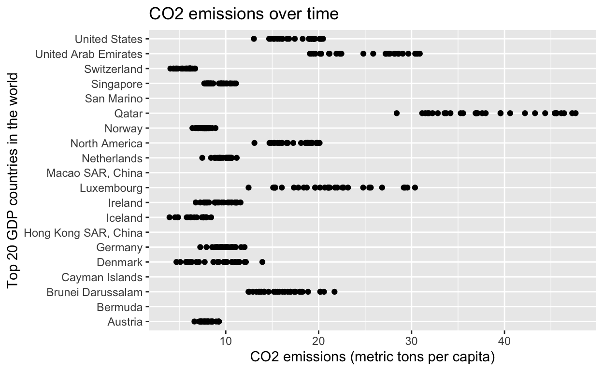

My final project
My research question for this project is: Does a country’s GDP increase its carbon emissions? The widely held belief by political and climate scientists around the world has long been that the higher a country’s GDP, the more their carbon emissions increase. This goes along with the idea that if a country is more economicaly developed, ergo more technologically advanced with a more elaborate quality of lifestyle for its citizens, their waste and consumption will lead to a higher carbon emission within said country. There is only a little evidence such as the 2016 report by the International Energy Agency that claims some countries do exist that have been able to reduce Green House Gas (GHG) emissions while growing GDP. Nevertheless, this idea assumes that a country’s technology and economy is at a stable enough level where they can put money into climate conscious policy. Most carbon emissions-GDP studies discover that countries usually spend the most carbon emissions when they are attempting to increase economic growth considerably. Thus, I expect that GDP and carbon emissions per capita have a positive relationship.
My data is derived from the World Bank. My sample is made up of all the countries the World Bank measures, including some territories (total: 217). The independent variable is GDP per capita, PPP (current international $). This is measured by using the gross domestic product (GDP) expressed in current international dollars converted by purchasing power parity (PPP) conversion factor. The dependent variable is carbon emissions which we will assume rise as a result of higher GDP. This dependent variable is measures by carbon dioxide emissions (metric tons per capita), which is seen through emissions which are stemming from the burning of fossil fuels and the manufacture of cement. They include carbon dioxide produced during consumption of solid, liquid, and gas fuels and gas flaring.
My outcome variable is the correlation relationship between this GDP and CO2 emissions. If the correlational variable is large and positive, then that means my hypothesis has been proven correct. If there seems to be no relationship between the variables (correlational coefficient is close to zero), that suggests economic growth has no effect on the emissions caused by higher production and consumption within a country. My hypothesis would also be wrong if this variable is large and negative, which implies GDP has a negative effect on emissions, and possibly that growth in GDP allows for technological growth that accounts for using more clean energy on a wider scale. I might also look into creating separate visualizations of the dataset in case analysis shows that more developed countries or that countries from a certain region have a much slower or faster slope of C02 and carbon emissions.
##Final Mileston #3 ##Turn year amounts from characters into numberslibrary(tidyverse)
library(ggplot2)
library(dplyr)
library(readr)
final_wb_data <- read_csv("final_wb_data.csv")
final_wb_data# A tibble: 537 × 36
`Country Name` `Country Code` `Series Name` `1990 [YR1990]`
<chr> <chr> <chr> <chr>
1 Afghanistan AFG GDP per capita, PPP … N/A
2 Afghanistan AFG CO2 emissions (metri… 0.191389345
3 Albania ALB GDP per capita, PPP … 2549.746801
4 Albania ALB CO2 emissions (metri… 1.844035463
5 Algeria DZA GDP per capita, PPP … 6974.076379
6 Algeria DZA CO2 emissions (metri… 2.466365604
7 American Samoa ASM GDP per capita, PPP … N/A
8 American Samoa ASM CO2 emissions (metri… N/A
9 Andorra AND GDP per capita, PPP … N/A
10 Andorra AND CO2 emissions (metri… 7.592152178
# ℹ 527 more rows
# ℹ 32 more variables: `1991 [YR1991]` <chr>, `1992 [YR1992]` <chr>,
# `1993 [YR1993]` <chr>, `1994 [YR1994]` <chr>,
# `1995 [YR1995]` <chr>, `1996 [YR1996]` <chr>,
# `1997 [YR1997]` <chr>, `1998 [YR1998]` <chr>,
# `1999 [YR1999]` <chr>, `2000 [YR2000]` <chr>,
# `2001 [YR2001]` <chr>, `2002 [YR2002]` <chr>, …final_wb_data$`1990 [YR1990]`<-as.numeric(as.character(final_wb_data$`1990 [YR1990]`))
final_wb_data$`2022 [YR2022]`<-as.numeric(as.character(final_wb_data$`2022 [YR2022]`))
final_wb_data$`1991 [YR1991]`<-as.numeric(as.character(final_wb_data$`1991 [YR1991]`))
final_wb_data$`1992 [YR1992]`<-as.numeric(as.character(final_wb_data$`1992 [YR1992]`))
final_wb_data$`1993 [YR1993]`<-as.numeric(as.character(final_wb_data$`1993 [YR1993]`))
final_wb_data$`1994 [YR1994]`<-as.numeric(as.character(final_wb_data$`1994 [YR1994]`))
final_wb_data$`1995 [YR1995]`<-as.numeric(as.character(final_wb_data$`1995 [YR1995]`))
final_wb_data$`1996 [YR1996]`<-as.numeric(as.character(final_wb_data$`1996 [YR1996]`))
final_wb_data$`1997 [YR1997]`<-as.numeric(as.character(final_wb_data$`1997 [YR1997]`))
final_wb_data$`1998 [YR1998]`<-as.numeric(as.character(final_wb_data$`1998 [YR1998]`))
final_wb_data$`1999 [YR1999]`<-as.numeric(as.character(final_wb_data$`1999 [YR1999]`))
final_wb_data$`2000 [YR2000]`<-as.numeric(as.character(final_wb_data$`2000 [YR2000]`))
final_wb_data$`2001 [YR2001]`<-as.numeric(as.character(final_wb_data$`2001 [YR2001]`))
final_wb_data$`2002 [YR2002]`<-as.numeric(as.character(final_wb_data$`2002 [YR2002]`))
final_wb_data$`2003 [YR2003]`<-as.numeric(as.character(final_wb_data$`2003 [YR2003]`))
final_wb_data$`2004 [YR2004]`<-as.numeric(as.character(final_wb_data$`2004 [YR2004]`))
final_wb_data$`2005 [YR2005]`<-as.numeric(as.character(final_wb_data$`2005 [YR2005]`))
final_wb_data$`2006 [YR2006]`<-as.numeric(as.character(final_wb_data$`2006 [YR2006]`))
final_wb_data$`2007 [YR2007]`<-as.numeric(as.character(final_wb_data$`2007 [YR2007]`))
final_wb_data$`2008 [YR2008]`<-as.numeric(as.character(final_wb_data$`2008 [YR2008]`))
final_wb_data$`2009 [YR2009]`<-as.numeric(as.character(final_wb_data$`2009 [YR2009]`))
final_wb_data$`2010 [YR2010]`<-as.numeric(as.character(final_wb_data$`2010 [YR2010]`))
final_wb_data$`2011 [YR2011]`<-as.numeric(as.character(final_wb_data$`2011 [YR2011]`))
final_wb_data$`2012 [YR2012]`<-as.numeric(as.character(final_wb_data$`2012 [YR2012]`))
final_wb_data$`2013 [YR2013]`<-as.numeric(as.character(final_wb_data$`2013 [YR2013]`))
final_wb_data$`2014 [YR2014]`<-as.numeric(as.character(final_wb_data$`2014 [YR2014]`))
final_wb_data$`2015 [YR2015]`<-as.numeric(as.character(final_wb_data$`2015 [YR2015]`))
final_wb_data$`2016 [YR2016]`<-as.numeric(as.character(final_wb_data$`2016 [YR2016]`))
final_wb_data$`2017 [YR2017]`<-as.numeric(as.character(final_wb_data$`2017 [YR2017]`))
final_wb_data$`2018 [YR2018]`<-as.numeric(as.character(final_wb_data$`2018 [YR2018]`))
final_wb_data$`2019 [YR2019]`<-as.numeric(as.character(final_wb_data$`2019 [YR2019]`))
final_wb_data$`2020 [YR2020]`<-as.numeric(as.character(final_wb_data$`2020 [YR2020]`))
final_wb_data$`2021 [YR2021]`<-as.numeric(as.character(final_wb_data$`2021 [YR2021]`))
ranks<- final_wb_data|>
filter(`Series Name`== "GDP per capita, PPP (current international $)")|>
group_by(`Country Name`)|>
mutate(totalgdp= sum(`1990 [YR1990]`, `1991 [YR1991]`, `1992 [YR1992]`, `1993 [YR1993]`, `1994 [YR1994]`, `1995 [YR1995]`, `1996 [YR1996]`, `1997 [YR1997]`, `1998 [YR1998]`, `1999 [YR1999]`, `2000 [YR2000]`, `2001 [YR2001]`, `2002 [YR2002]`, `2003 [YR2003]`, `2004 [YR2004]`, `2005 [YR2005]`, `2006 [YR2006]`, `2007 [YR2007]`, `2008 [YR2008]`, `2009 [YR2009]`, `2010 [YR2010]`, `2011 [YR2011]`, `2012 [YR2012]`, `2013 [YR2013]`, `2014 [YR2014]`, `2015 [YR2015]`, `2016 [YR2016]`, `2017 [YR2017]`, `2018 [YR2018]`, `2019 [YR2019]`, `2020 [YR2020]`, `2021 [YR2021]`, `2022 [YR2022]`, na.rm=TRUE))
ranks# A tibble: 266 × 37
# Groups: Country Name [266]
`Country Name` `Country Code` `Series Name` `1990 [YR1990]`
<chr> <chr> <chr> <dbl>
1 Afghanistan AFG GDP per capita,… NA
2 Albania ALB GDP per capita,… 2550.
3 Algeria DZA GDP per capita,… 6974.
4 American Samoa ASM GDP per capita,… NA
5 Andorra AND GDP per capita,… NA
6 Angola AGO GDP per capita,… 3283.
7 Antigua and Barbuda ATG GDP per capita,… 11436.
8 Argentina ARG GDP per capita,… 7184.
9 Armenia ARM GDP per capita,… 2757.
10 Aruba ABW GDP per capita,… 20754.
# ℹ 256 more rows
# ℹ 33 more variables: `1991 [YR1991]` <dbl>, `1992 [YR1992]` <dbl>,
# `1993 [YR1993]` <dbl>, `1994 [YR1994]` <dbl>,
# `1995 [YR1995]` <dbl>, `1996 [YR1996]` <dbl>,
# `1997 [YR1997]` <dbl>, `1998 [YR1998]` <dbl>,
# `1999 [YR1999]` <dbl>, `2000 [YR2000]` <dbl>,
# `2001 [YR2001]` <dbl>, `2002 [YR2002]` <dbl>, …#M3 Ranks
ranks <- final_wb_data[order(desc(final_wb_data$`2019 [YR2019]`)),]
ranks <- ranks[1:20,]
ranks# A tibble: 20 × 36
`Country Name` `Country Code` `Series Name` `1990 [YR1990]`
<chr> <chr> <chr> <dbl>
1 Macao SAR, China MAC GDP per capita… 26720.
2 Luxembourg LUX GDP per capita… 29950.
3 Singapore SGP GDP per capita… 23813.
4 Qatar QAT GDP per capita… NA
5 Ireland IRL GDP per capita… 13744.
6 Bermuda BMU GDP per capita… 34871.
7 Cayman Islands CYM GDP per capita… NA
8 United Arab Emirates ARE GDP per capita… 83843.
9 Switzerland CHE GDP per capita… 28463.
10 Norway NOR GDP per capita… 18462.
11 United States USA GDP per capita… 23889.
12 Brunei Darussalam BRN GDP per capita… 55168.
13 North America NAC GDP per capita… 23526.
14 San Marino SMR GDP per capita… NA
15 Hong Kong SAR, China HKG GDP per capita… 18250.
16 Netherlands NLD GDP per capita… 19176.
17 Denmark DNK GDP per capita… 18244.
18 Austria AUT GDP per capita… 19473.
19 Iceland ISL GDP per capita… NA
20 Germany DEU GDP per capita… 19464.
# ℹ 32 more variables: `1991 [YR1991]` <dbl>, `1992 [YR1992]` <dbl>,
# `1993 [YR1993]` <dbl>, `1994 [YR1994]` <dbl>,
# `1995 [YR1995]` <dbl>, `1996 [YR1996]` <dbl>,
# `1997 [YR1997]` <dbl>, `1998 [YR1998]` <dbl>,
# `1999 [YR1999]` <dbl>, `2000 [YR2000]` <dbl>,
# `2001 [YR2001]` <dbl>, `2002 [YR2002]` <dbl>,
# `2003 [YR2003]` <dbl>, `2004 [YR2004]` <dbl>, …copy <- ranks |>
pivot_longer(cols = `1990 [YR1990]` : `2022 [YR2022]`,
names_to = "year",
values_to = "amount") |>
mutate(year = as.integer(gsub("\\D", "", year)))
copy# A tibble: 660 × 5
`Country Name` `Country Code` `Series Name` year amount
<chr> <chr> <chr> <int> <dbl>
1 Macao SAR, China MAC GDP per capita, PPP … 1.99e7 26720.
2 Macao SAR, China MAC GDP per capita, PPP … 1.99e7 27673.
3 Macao SAR, China MAC GDP per capita, PPP … 1.99e7 31208.
4 Macao SAR, China MAC GDP per capita, PPP … 1.99e7 32869.
5 Macao SAR, China MAC GDP per capita, PPP … 1.99e7 34272.
6 Macao SAR, China MAC GDP per capita, PPP … 2.00e7 35428.
7 Macao SAR, China MAC GDP per capita, PPP … 2.00e7 35245.
8 Macao SAR, China MAC GDP per capita, PPP … 2.00e7 35109.
9 Macao SAR, China MAC GDP per capita, PPP … 2.00e7 33309.
10 Macao SAR, China MAC GDP per capita, PPP … 2.00e7 32459.
# ℹ 650 more rowslibrary(ggplot2)
scatterplot <- ggplot(data = copy,
mapping = aes(x = amount,
y = `Country Name`)) +
geom_point() +
labs(x = "GDP per capita, PPP (current international $)",
y = "Top 20 GDP countries in the world",
title = "GDP over time (1990-2022)",
)
scatterplot
##Explanation My initial plan for this visualization was to only focus on making a visualization for the independent variable, GDP per capita. My data set included the values for all countries in the world from 1990 - 2021. When I first tried making a scatter plot for this information, I realized these were too many data points.
So, I decided to rank the data and only use the top 20 countries with the highest GDPs. I discussed a way to rank this with a TF and they mentioned that it wouldn’t be a good idea to simply add all the GDPs and then rank the data, and that I should just use the most recent GDP values and rank it for a certain year. So, I picked 2019 as the year I wanted to rank all the country’s values. When I tried ranking the data, I realized that the number amounts were being recognized as ‘characters’, so I used the as.numeric function to go through every year and fix that.
Then, I ranked the data. I named this ‘ranks’, and so the top twenty countries were the only countries shown, and their values were included from 1990-2021. Next, I used ‘pivot longer’ to change the years from being many columns to just one column.
Finally, I turned this all into a scatterplot for the top 20 GDP countries.
##Final Milestone #4
#Only choose top 20 rank countriesCO2 <- final_wb_data |>
group_by(`Country Name`) |>
filter(`Country Name` == "Macao SAR, China" | `Country Name` == "Luxembourg"| `Country Name` == "Singapore"| `Country Name` == "Qatar"| `Country Name` == "Ireland"| `Country Name` == "Bermuda"| `Country Name` == "Cayman Islands"| `Country Name` == "United Arab Emirates"| `Country Name` == "Switzerland"| `Country Name` == "Norway"| `Country Name` == "United States"| `Country Name` == "Brunei Darussalam"| `Country Name` == "North America"| `Country Name` == "San Marino"| `Country Name` == "Hong Kong SAR, China"| `Country Name` == "Netherlands"| `Country Name` == "Denmark"| `Country Name` == "Austria"| `Country Name` == "Iceland"| `Country Name` == "Germany")
CO2# A tibble: 40 × 36
# Groups: Country Name [20]
`Country Name` `Country Code` `Series Name` `1990 [YR1990]`
<chr> <chr> <chr> <dbl>
1 Austria AUT GDP per capita, P… 19473.
2 Austria AUT CO2 emissions (me… 7.59
3 Bermuda BMU GDP per capita, P… 34871.
4 Bermuda BMU CO2 emissions (me… NA
5 Brunei Darussalam BRN GDP per capita, P… 55168.
6 Brunei Darussalam BRN CO2 emissions (me… 12.4
7 Cayman Islands CYM GDP per capita, P… NA
8 Cayman Islands CYM CO2 emissions (me… NA
9 Denmark DNK GDP per capita, P… 18244.
10 Denmark DNK CO2 emissions (me… 10.1
# ℹ 30 more rows
# ℹ 32 more variables: `1991 [YR1991]` <dbl>, `1992 [YR1992]` <dbl>,
# `1993 [YR1993]` <dbl>, `1994 [YR1994]` <dbl>,
# `1995 [YR1995]` <dbl>, `1996 [YR1996]` <dbl>,
# `1997 [YR1997]` <dbl>, `1998 [YR1998]` <dbl>,
# `1999 [YR1999]` <dbl>, `2000 [YR2000]` <dbl>,
# `2001 [YR2001]` <dbl>, `2002 [YR2002]` <dbl>, …copy2 <- CO2 |>
pivot_longer(cols = `1990 [YR1990]` : `2022 [YR2022]`,
names_to = "year",
values_to = "amount") |>
mutate(year = as.integer(gsub("\\D", "", year)))|>
filter(`Series Name`== "CO2 emissions (metric tons per capita)")
copy2# A tibble: 660 × 5
# Groups: Country Name [20]
`Country Name` `Country Code` `Series Name` year amount
<chr> <chr> <chr> <int> <dbl>
1 Austria AUT CO2 emissions (metric … 1.99e7 7.59
2 Austria AUT CO2 emissions (metric … 1.99e7 8.05
3 Austria AUT CO2 emissions (metric … 1.99e7 7.35
4 Austria AUT CO2 emissions (metric … 1.99e7 7.31
5 Austria AUT CO2 emissions (metric … 1.99e7 7.34
6 Austria AUT CO2 emissions (metric … 2.00e7 7.70
7 Austria AUT CO2 emissions (metric … 2.00e7 8.15
8 Austria AUT CO2 emissions (metric … 2.00e7 8.06
9 Austria AUT CO2 emissions (metric … 2.00e7 8.11
10 Austria AUT CO2 emissions (metric … 2.00e7 7.89
# ℹ 650 more rowslibrary(ggplot2)
scatterplot2 <- ggplot(data = copy2,
mapping = aes(x = amount,
y = `Country Name`)) +
geom_point() +
labs(x = "CO2 emissions (metric tons per capita)",
y = "Top 20 GDP countries in the world",
title = "CO2 emissions over time",
)
scatterplot2
##Explanation
This second visualization is of the same ‘top 20 GDP’ countries, but with their CO2 emissions over time. As we can see on the graph, CO2 emissions have increased over time. Thus, we notice that both there is a general trend where CO2 and GDP grow over time. It is important to note that this is not necessarily a causal relationship. Nevertheless, it is interesting to see how GDP has grown more over time than CO2.